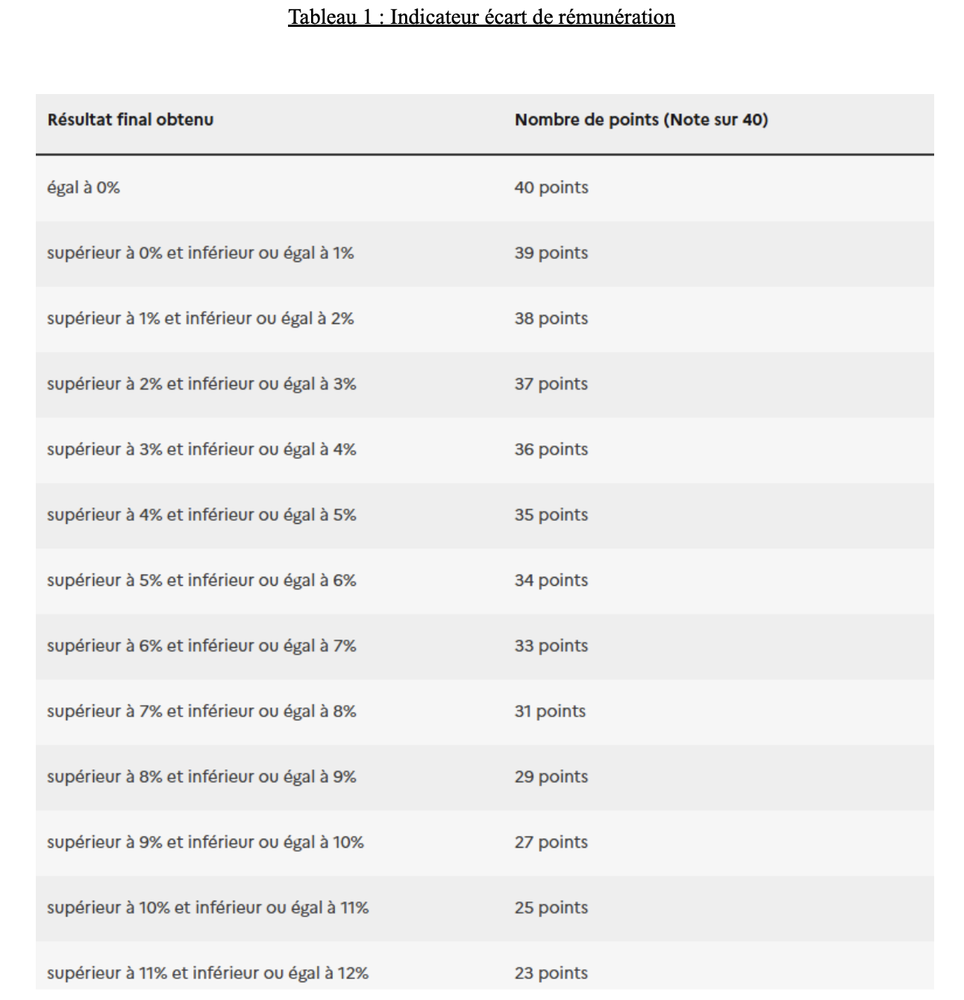
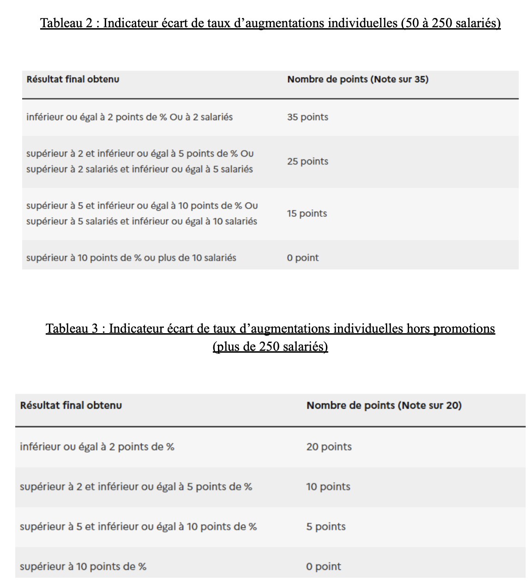
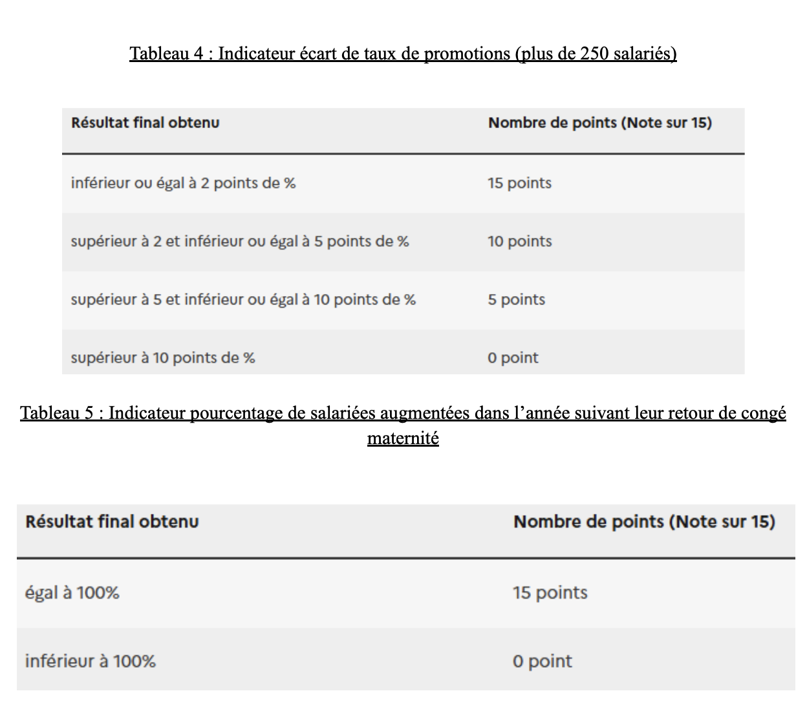
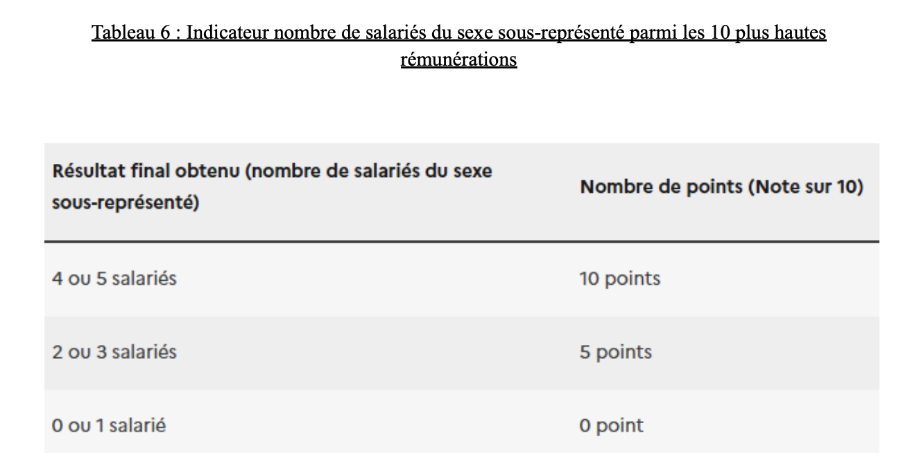

La vie sociale des données - Egapro
Accueil
Introduction
L’origine du jeu de données
Le critère Egapro
Un index aux ambitions fortes
Egapro, un index imparfait
Conclusion
Annexes
Graphes
Entretiens
Questionnaire
Textes de loi
Tableaux d’équivalence
Bibliographie
Tableaux d’équivalence entre les résultats d’une entreprise et le nombre de points
   